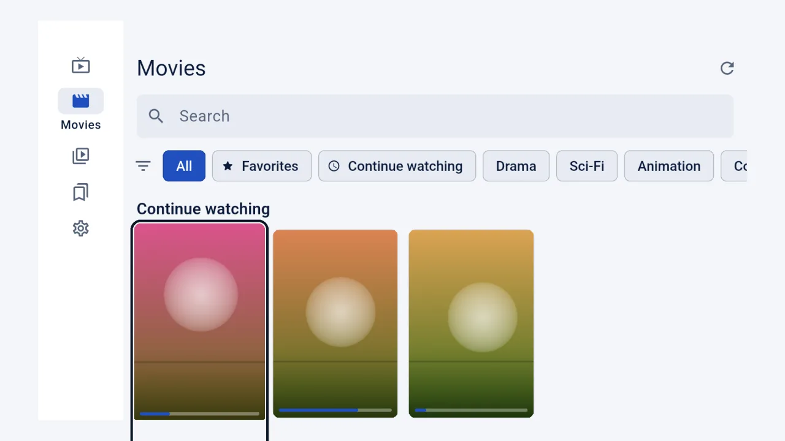
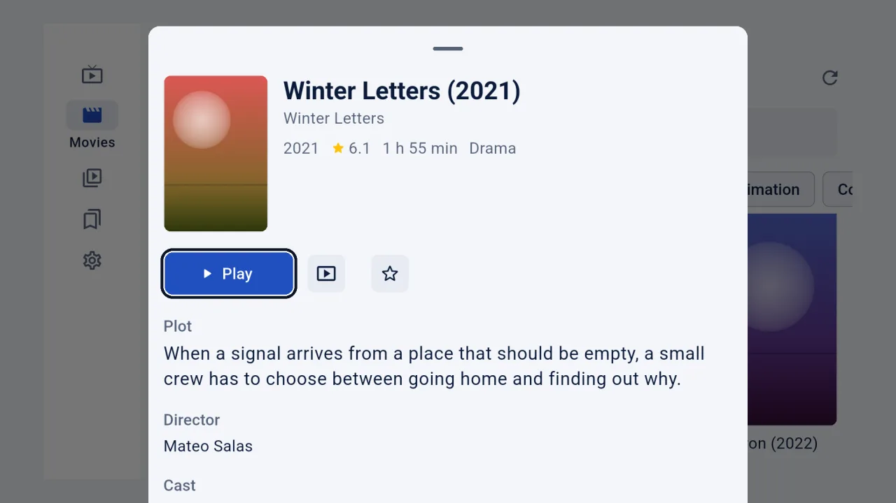

IPTV on your TV,with the remote.
The Android app with a layout built for the remote control. It runs on Android TV, Google TV and Fire TV boxes and sticks.

Install
Android 8 or later. Works with the remote control; no touch screen needed.
- On the TV, install the Downloader app and open it.
- Type the address of the file, or copy the file to a USB stick and open it with a file manager. Try the 32-bit file first; if the TV says it is not compatible, use the 64-bit one.
- Allow Downloader to install apps, then install and open IPTVMac. OK selects, Back goes up one level, and holding Back closes the app.
Installs directly for now (no store listing yet). Updates are manual: install the new file over the old one. There are no downloads or backup files on the TV version.
What you get
Made for the remote.
A clear focus ring, OK to select, Back to go up one level. No touch screen needed.
The whole library on the big screen.
Live, Movies and Series, with categories and search.

Details before you press play.
Plot, year and rating where your provider sends them.

Questions
How do I install it on a Fire TV?
Install the Downloader app from the Amazon store, type the address of the file, allow Downloader to install apps, then open IPTVMac.
32-bit or 64-bit?
Try the 32-bit file first: it runs on almost every TV and box. If the TV says it is not compatible, use the 64-bit one.
How does it update?
Manually for now: install the new file over the old one.